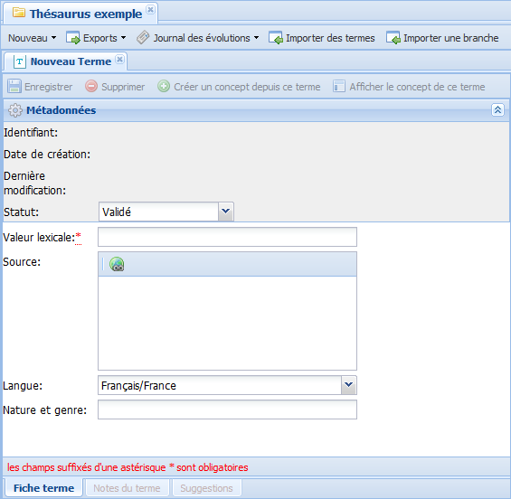

Termes
Terme ?
ConceptTerme⚓
Un Terme représente, exprime un Concept. Un Concept peut être représenté par plusieurs Termes reliés entre eux par une relation d'équivalence.
RéglementaireRègles relatives aux Termes préférentiels du Concept⚓
Gardez toujours en tête les règles suivantes pour la liste des termes d'un Concept :
Un
Conceptdoit obligatoirement avoir un Terme préférentiel[1] pour exister (et pouvoir être enregistré) ;Un
Conceptpeut être exprimé par différentsTermes(préférentiels ou non) mais il ne peut avoir qu'un Terme préférentiel dans chacune des langues du vocabulaire. Autrement dit, il peut avoir plusieurs Termes préférentiels, à condition que ces derniers appartiennent à des langues différentes.
Création de Termes
Création d'un Concept et son Terme préférentiel⚓
ProcédureCréer un Concept et son Terme préférentiel⚓
Cette procédure explique comment créer simultanément un Concept et son Terme préférentiel[1].
RemarqueRemarque⚓
Cette procédure suppose que le Terme n'existe pas déjà dans le vocabulaire. Dans le cas contraire, lors de l'enregistrement, un message d'erreur s'affiche et le Concept ne peut pas être sauvegardé.
Cliquez sur le bouton
Nouveaudu menu du vocabulaire.Un menu déroulant s'affiche.

Sélectionnez
Concept + Terme.La fenêtre
Création de nouveau termes'affiche.
Complétez les champs de cette fenêtre puis cliquez sur

Enregistrer.AttentionImportant⚓
Les champs suivis d'un astérisque rouge sont obligatoires.
ComplémentEn savoir plus...⚓
Pour en savoir plus sur les champs de cette fenêtre : Édition d'un Terme
Un onglet
Nouveau concepts'affiche dans la zone d'édition du vocabulaire. Ce nouveauConceptest déjà exprimé par leTerme préférentielque vous venez de créer.
Complétez les champs de cet onglet puis cliquez sur
Enregistrer.AttentionImportant⚓
Les champs suivis d'un astérisque rouge sont obligatoires.
ComplémentEn savoir plus...⚓
Pour en savoir plus sur les champs de cet onglet : Édition d'un Concept
Le
Conceptest créé. Il est automatiquement classé dans l'Arborescence des concepts ou dans lesConcepts orphelins, selon votre paramétrage.Si...
... alors...
il est classé à la racine de l'Arborescence des concepts.
le
Concepta unConcept parentdans l'Arborescence des concepts,il est classé sous son
Concept parentdans l'Arborescence des concepts.le
Conceptn'est pas TT et n'a deConcept parent,il est classé à la racine des Concepts orphelins.
le
Concepta unConcept parentorphelin,il est classé sous son
Concept parentdans les Concepts orphelins.
Création d'un Terme seul⚓
ProcédureCréer un Terme seul⚓
Cliquez sur le bouton
Nouveaudu menu du vocabulaire.Un menu déroulant s'affiche.
Sélectionnez
Terme seul.Un onglet
Nouveau termes'affiche dans la zone d'édition du vocabulaire.
Complétez les champs de cet onglet puis cliquez sur
Enregistrer.AttentionImportant⚓
Les champs suivis d'un astérisque rouge sont obligatoires.
ComplémentEn savoir plus...⚓
Pour en savoir plus sur les champs de cet onglet : Édition d'un Terme
Le
Termeest créé. Il est automatiquement classé dans lesTermes orphelins.ComplémentEn savoir plus....⚓
Pour en savoir plus sur les Termes orphelins et la manière de les rattacher à l'arborescence des concepts : Termes orphelins
Création d'un Terme depuis un Concept⚓
ProcédureCréer un Terme depuis un Concept⚓
Cliquez sur le bouton
Ajouter un termedans la zone d'édition duConcept.Un menu déroulant s'affiche.

Sélectionnez l'option de votre choix.
Truc & astuceDétails⚓
Terme préférentiel / Créer un nouveau termeTerme non préférentiel / Créer un nouveau terme
La fenêtre
Création de nouveau termes'affiche.
Complétez les champs de cette fenêtre puis cliquez sur
Enregistrer.AttentionImportant⚓
Les champs suivis d'un astérisque rouge sont obligatoires.
RéglementaireEn cas de doublon⚓
Si le terme existe déjà, un message d'erreur s'affiche au moment de l'enregistrement et le terme ne peut pas être enregistré.
ComplémentEn savoir plus...⚓
Pour en savoir plus sur les champs de cette fenêtre : Édition d'un Terme
Le
Termeest créé ; il est ajouté à la liste des termes duConcept.
Cliquez sur
Enregistrerpour sauvegarder les modifications apportées auConcept.
Import de Termes⚓
ProcédureImporter des Termes⚓
La fonction 
Importer des termes permet de collecter du vocabulaire massivement et rapidement.
Vous avez créé une liste de termes dans un fichier au format .txt (à l'aide de Notepad++, par exemple).
AttentionAttention⚓
Les termes de votre liste doivent être :
rédigés de cette manière : terme@codeLangue ;
Exemples :
grelot@fr
school@en
encodés en UTF-8.
RemarqueRemarque⚓
En cas d'absence de langue, les termes sont importés avec la langue par défaut, déclarée lors de l'installation de l'application.
Cliquez sur le bouton

Importer des termesdu menu du vocabulaire.La fenêtre
Imports'affiche.
Cliquez sur le bouton
 pour sélectionner le fichier à importer.
pour sélectionner le fichier à importer.Une fenêtre d'exploration de votre disque dur s'affiche.
Parcourez votre espace de stockage jusqu'au fichier à importer et sélectionnez-le par un double-clic.
Cliquez sur le bouton
Importerde la fenêtreImport.Les termes sont importés. Ils sont automatiquement classés dans les
Termes orphelins.ComplémentEn savoir plus....⚓
Pour en savoir plus sur les Termes orphelins et la manière de les rattacher à l'arborescence des concepts : Termes orphelins
Édition d'un Terme
ÉcranÉditer un terme⚓
Vous trouverez ci-dessous des indications sur la manière d'éditer un Terme (saisir sa valeur lexicale (nom), préciser la source,...) et sur les actions disponibles à partir de l'interface d'un Terme (afficher le Concept correspondant, ajouter des notes,...).
RéglementaireAfficher le Terme⚓
Il existe plusieurs manières d'afficher un Terme dans la zone de travail :
Lors de la création d'un nouveau
Terme;Depuis un
Concept(en double-cliquant sur la ligne d'unTermedans la rubriqueListe des termes) ;
Depuis les
Termes orphelins(en double-cliquant sur la ligne d'unTermedans la liste des termes orphelins) ;À l'issue d'une recherche (en double-cliquant sur la ligne d'un
Termedans les résultats de la recherche).
AttentionImportant⚓
Les champs suivis d'un astérisque rouge sont obligatoires.

- 1 Élément actif (Terme)

Onglet de l'élément actif.
Dans cet exemple, il s'agit du
TermeÉcole du vocabulaire Thésaurus exemple. - 2 Enregistrer

Cliquez sur le bouton
Enregistrerpour sauvegarder vos modifications. - 3 Supprimer

Cliquez sur le bouton

Supprimerpour supprimer cet élément du vocabulaire.AttentionAttention⚓
Ce bouton n'est actif que sur les Termes orphelins[3] dont le statut est
CandidatouRejeté. - 4 Créer un concept depuis ce terme

AttentionAttention⚓
Ce bouton n'est actif que sur les Termes orphelins.
ComplémentEn savoir plus...⚓
Pour en savoir plus : Termes orphelins
- 5 Afficher le concept de ce terme

Ce bouton permet d'ouvrir dans la zone de travail le
Conceptauquel ceTermeest rattaché.AttentionAttention⚓
Ce bouton n'est disponible que sur les Termes non orphelins.
- 6 Métadonnées

Les métadonnées descriptives du
Termepeuvent être de 2 types :Automatiques : elles sont créées et mises à jour automatiquement ;
Manuelles : c'est à vous de les paramétrer.
RéglementaireAfficher les métadonnées⚓
Pour afficher ou masquer les métadonnées, cliquez sur le bouton
 , à droite de la barre de titre
, à droite de la barre de titre Métadonnées. - 7 Statut du Terme

Un
Termepeut avoir plusieurs statuts.Ces statuts sont utiles à la gestion du vocabulaire :
Seuls les
Termesdont le statut estValidépeuvent être rattachés à des Concepts.Seuls les statuts des Termes orphelins peuvent être modifiés.
RéglementaireStatuts possibles d'un Concept⚓
Le statut...
...désigne un concept...
Valide
actuellement en usage et conseillé.
Candidat
en attente de statut ; il sera soit
Validé, soitRejeté.Il s'agit souvent d'un terme proposé par des utilisateurs ou des contributeurs et qui nécessite un processus de validation.
(ce statut rend possible la suppression du Terme)
Rejeté
qui n'a pas été validé.
(ce statut rend possible la suppression du Terme)
RéglementaireNouveaux Termes⚓
Le statut par défaut des nouveaux
Termesdépend du rôle de l'utilisateur qui le créé :Si je suis...
... alors, un nouveau Terme est...
ResponsableouAdministrateurValide
ExpertCandidat
RéglementaireChanger le statut d'un Terme⚓
Le statut d'un
Termepeut être modifié par le responsable ou l'administrateur du vocabulaire.Pour changer le statut du
Terme:Dans les métadonnées du
Terme(orphelin), cliquez sur la flèche du menu déroulant
du menu déroulant Statut.> Un menu déroulant apparaît.
Sélectionnez le statut de votre choix.
Enregistrez vos modifications.
> Le statut du
Termeest modifié.
- 8 Valeur lexicale

Permet de saisir le nom correspondant au
Terme. - 9 Source

Saisissez des informations sur les ressources (papier ou en ligne) ayant servi de sources à l'élaboration du terme.
Pour ajouter des liens externes (vers une URL, une adresse courriel...) , sélectionnez un (ou plusieurs) mot et cliquez sur le bouton
 .
. - 10 Langue

Sélectionnez dans la liste déroulante la langue du
Terme.AttentionImportant⚓
Un
Termene peut avoir qu'une seule langue.La liste des langues dépend du paramétrage de votre vocabulaire.
- 11 Attributs personnalisés

Exemple d'attributs personnalisés.
- 12 Fiche terme

L'onglet
Fiche termepermet de paramétrer leTerme.Dans cet exemple, c'est l'onglet actif dans la zone d'édition.
- 13 Notes du Terme
- 14 Suggestions

Permet d'afficher les Suggestions[5] du
Termedans la zone d'édition.Voir : Suggestions


Notes
Notes ?⚓
ConceptNotes⚓
Des notes peuvent être ajoutées par un utilisateur sur les Concepts et les Termes.
Elles peuvent être de différents types ; certaines détaillent l'élément et sont exploitées dans les exports du vocabulaire, d'autres sont des notes de gestion internes à l'application.
Réglementaire
Type de note | Usage |
|---|---|
Note d'application | Définir l'étendue du |
Note historique | Préciser l'historique des modifications apportés au Concept au sein du vocabulaire. |
Exemple | Donner un exemple. |
Type de note | Usage |
|---|---|
Note éditoriale | Note de gestion interne destinée aux gestionnaires du vocabulaire. |
Note historique | Préciser l'historique des modifications apportés au Terme au sein du vocabulaire. |
Définition | Définir le Terme. |
Ajout de notes⚓
ProcédureAjouter une note⚓
RemarqueRemarque⚓
Cette procédure explique à la fois comment ajouter une note à un Concept et à un Terme.
Sélectionnez l'onglet
Notes du conceptouNotes du Termeen bas de l'élément actif.La liste des notes de l'élément s'affiche dans la zone d'édition du vocabulaire.

Cliquez sur le bouton

Ajouter une note.La fenêtre
Nouvelle notes'affiche.
Complétez les champs de cette fenêtre puis cliquez sur
Ajouter la note.AttentionImportant⚓
Les champs suivis d'un astérisque rouge sont obligatoires.
Le note est créée. Elle est automatiquement classée par ordre alphabétique dans la liste des notes de l'élément (
ConceptouTerme).
Cliquez sur le bouton
Enregistrerde l'élément (ConceptouTerme) pour sauvegarder vos modifications.

Édition d'une note⚓
ÉcranÉditer une note⚓
Vous trouverez ci-dessous des indications sur la manière de modifier, compléter une note d'un Concept ou d'un Terme.
RéglementaireAfficher la note⚓
Affichez la liste des notes de l'élément concerné (Concept ou Terme), puis double-cliquez sur la ligne de la note que vous souhaitez modifier.
> La note s'ouvre dans une sur-fenêtre.
AttentionImportant⚓
Les champs suivis d'un astérisque rouge sont obligatoires.

- 1 Valeur lexicale

Saisissez le contenu rédactionnel de la note.
Pour ajouter des liens externes (vers une URL, une adresse courriel...) , sélectionnez un (ou plusieurs) mot et cliquez sur le bouton
. - 2 Langue

Sélectionnez dans la liste déroulante la langue de la note.
- 3 Source

Saisissez des informations sur les ressources (papier ou en ligne) ayant servi de sources à l'élaboration de la note.
Pour ajouter des liens externes (vers une URL, une adresse courriel...) , sélectionnez un (ou plusieurs) mot et cliquez sur le bouton
. - 4 Type

Sélectionnez dans la liste déroulante le type de la note.
- 5 Ajouter la note

Cliquez sur le bouton
Ajouter la notepour la mettre à jour parmi la liste des notes.Cliquez sur le bouton
Enregistrerde l'élément (ConceptouTerme) pour sauvegarder vos modifications.
Termes orphelins
Terme orphelin ?⚓
ConceptTerme orphelin⚓
Un Terme orphelin est un terme qui n'est associé à aucun Concept.
RéglementaireOù les trouver ?⚓
Les Termes orphelins sont automatiquement rangés dans un répertoire, nommé Termes orphelins, dans le dossier du Vocabulaire :

Si aucun orphelin n'existe dans le vocabulaire, alors le répertoire correspondant n'existe pas non plus.
Rattachement des orphelins⚓
Il existe deux manières de rattacher un Terme orphelin à l'arborescence des concepts :
l'associer à un
Conceptexistant,créer un nouveau
Conceptdepuis ce terme orphelin.
Les procédures correspondantes sont décrites ci-dessous.
Association d'un Terme orphelin à un Concept existant⚓
ProcédureAssocier un Terme existant (orphelin) à un Concept⚓
Cliquez sur le bouton
Ajouter un termedans la zone d'édition duConcept.Un menu déroulant s'affiche.
Sélectionnez l'option de votre choix.
Truc & astuceDétails⚓
Terme préférentiel / Sélectionner un terme existantTerme non préférentiel / Sélectionner un terme existant
La fenêtre
Sélection d'un termes'affiche.
RéglementaireFenêtre Sélection d'un terme⚓
La liste des termes disponibles (termes orphelins) est paginée, avec la possibilité de naviguer de page en page ou d'aller directement à une page donnée.
Par défaut, les termes sont triés par ordre alphabétique. Cliquez sur un titre de colonne pour inverser l'ordre de tri.
Cliquez sur la ligne du terme de votre choix, puis cliquez sur
Sélectionner un termeen haut de la fenêtre.Le
Termeest sélectionné ; il est ajouté à la liste des termes duConcept.
Cliquez sur
Enregistrerpour sauvegarder les modifications apportées auConcept.
Création d'un Concept à partir d'un Terme orphelin⚓
ProcédureCréer un Concept à partir d'un Terme orphelin⚓
Cliquez sur le bouton
Créer un concept depuis ce termedu Terme orphelin concerné.ComplémentEn savoir plus...⚓
Pour savoir comment afficher un terme dans la zone de travail : Édition d'un Terme
Un onglet
Nouveau concepts'affiche dans la zone d'édition du vocabulaire. Le Terme orphelin est déjà leTerme préférentielde ce nouveauConcept.
Cliquez sur le bouton
Enregistrerpour créer le nouveauConcept.Le
Conceptest créé.Si l'option
Concepts TT par défautde la Fiche vocabulaire de votre thésaurus est cochée, alors le nouveau Concept devient un TT dans l'arborescence des concepts.Si l'option
Concepts TT par défautde la Fiche vocabulaire de votre thésaurus n'est pas cochée, alors, le nouveau Concept est classé dans lesConcepts orphelins.